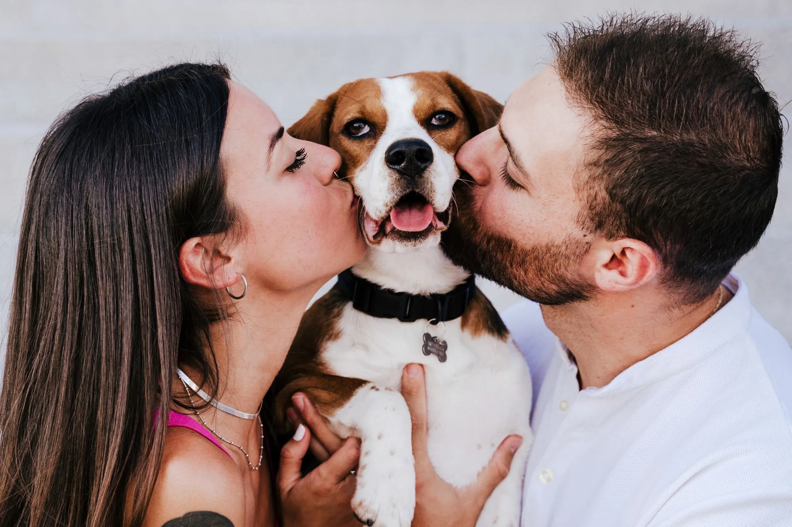
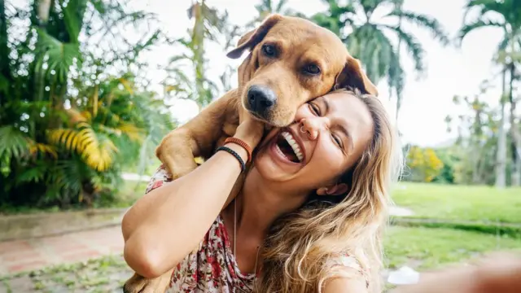

Historias de Éxito ❤️
Gracias a la colaboración de la comunidad, muchas mascotas han logrado regresar con sus familias.

Luna 🐶
Luna estuvo desaparecida durante cinco días. Gracias a un vecino que vio el reporte en Huellas de Regreso, pudo volver sana y salva con su familia.

Max 🐕
Max se perdió durante un paseo. Un ciudadano lo reconoció gracias a la fotografía publicada y se comunicó con sus dueños para reunirlos nuevamente.

Mía 🐱
Mía fue encontrada por una familia que consultó la plataforma. En menos de 24 horas pudo regresar a casa con sus dueños.